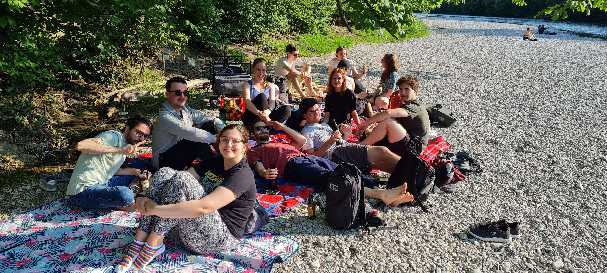
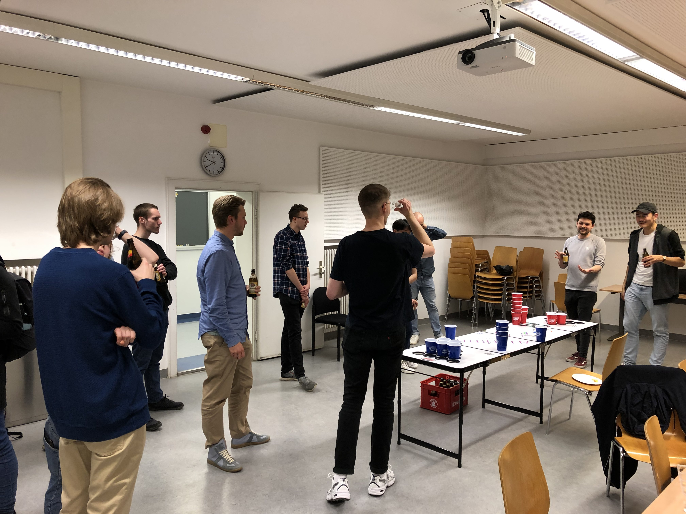
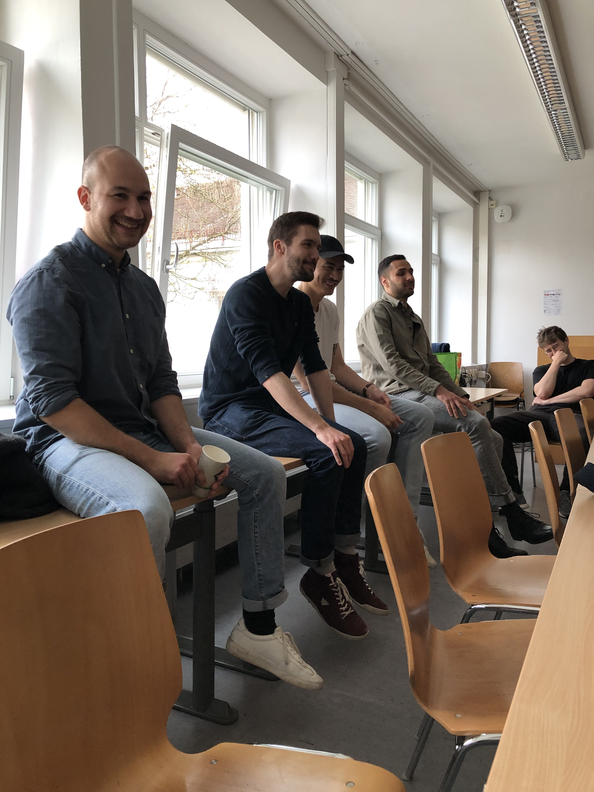
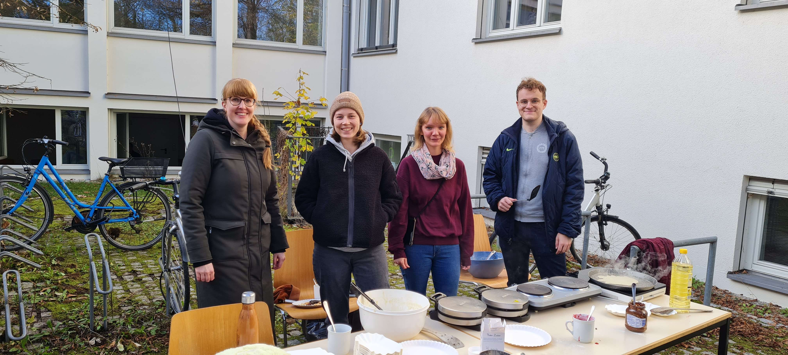
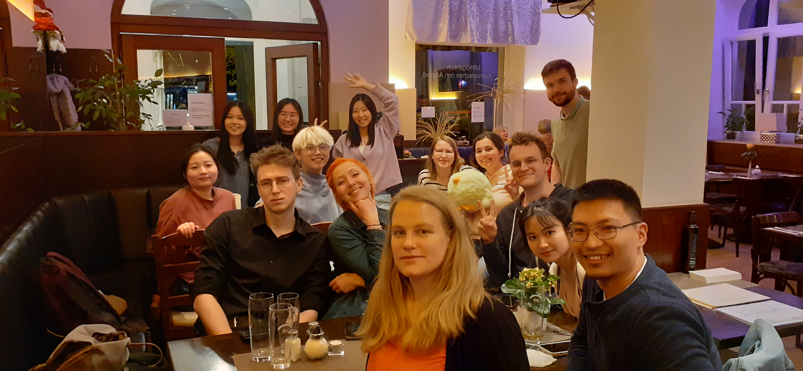

Hier stehen einige Alt- und Übungsklausuren der letzten Jahre zum Download bereit. Das Passwort kann per Campus-Mail an fachschaft@cis.uni-muenchen.de angefragt werden.
Bachelor:
Isar-Chillout Juni '23Bierpong-Turnier Mai '23Alumni-Treff Mai '23Stammtisch März '23Crêpestag November '22Waffeltag Mai '22Stammtisch April '22
Sitzungsprotokolle der Fachschaft Computerlinguistik